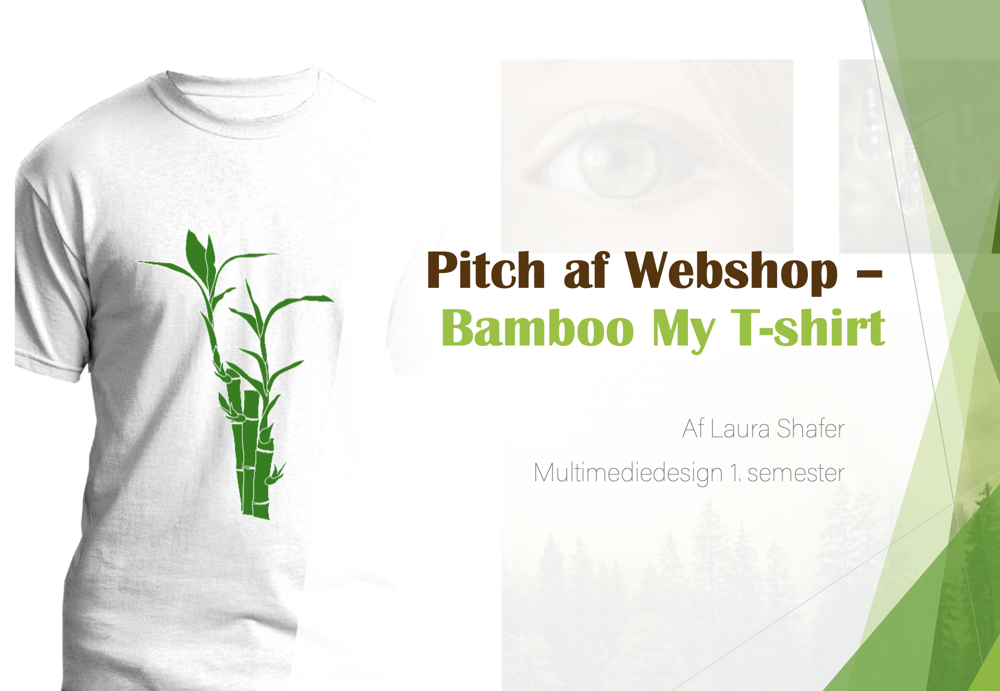
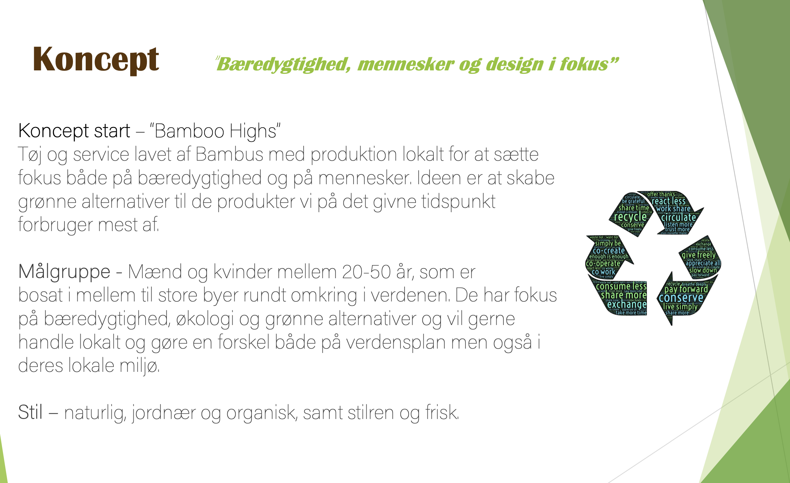

Tema 3 - Grundlæggende UX
Tema beskrivelse
UX bruges i dag som en fast bestanddel af udviklingen af digitale
brugergrænseflader og disciplinens arbejdsområde, værktøjer og
metoder spreder sig over uddannelsens fem fagområder.
Dette tema giver en grundlæggende forståelse for samspillet mellem
brugere og brugergrænseflader, samt hvilke teorier, værktøjer og
metoder man kan benytte til research, design og test i en digital
produktudvikling.
Forståelse for dette samspil er vigtigt for at designvalg og
produktudvikling baseres på konkrete indsigter om reelle brugere i
stedet for diffuse mavefornemmelser og umiddelbare antagelser.
Formålet med temaet er at give én erfaring med udvalgte UX-metoder
samt at lære hvordan man præsenterer sit produkt, samt formidler
sin research- og testresultater for interessenter.
Projekt beskrivelse
03.03.06 Prototype 2
Ud fra vores solution sketch 2 opgave skulle vi lave en lofi
prototype i Adobe XD.
Vi skulle lave en prototype af den grundlæggende struktur og
navigation af vores idé til en løsning, hvor vi udover
forsiden/startsiden skullle have mindst 4 andre sider.
Der skulle bruges UI Kits, UI Patterns, samt transitions.
Derudover skulle der være indarbejdet den visuelle stil, som vi
lagde fast i vores styletile. Vi skulle også arbejde med at
implementere fotos, copy, microcopy og tagline i vores løsninger.
Refleksioner af tema og projekt
Det var superspændende at arbejde med at udforme en hjemmeside
prototype og endvidere udforske hvor mange muligheder XD tilbyder.
Det er bestemt et program jeg er blevet hurtigt glad for.
Jeg ville, set i retrospekt, gerne have tid og mulighed for at
gøre billederne bedre og for at optimere min webshop ”Bamboo My
T-shirt” yderligere, men jeg er grundlæggende tilfreds med at det
var mit ”første” 2. forsøg på en prototype af webshop
Projekt beskrivelse
03.03.02 Pitch
Vi skulle dokumentere vores designprocesser til vores T-shirt webshop prototype og løsningen vi kom frem til og så skulle denne proces pitches for vores gruppe.”
Refleksioner af tema og projekt
Jeg var meget tilfreds med mit pitch deck i powerpoint. Feedbacken jeg fik på denne var også meget god. Bl.a. syntes gruppen at det var et veltænkt koncept og at formidlingen var meget tydelig, med gode indsigter og research. Jeg var grundlæggende godt tilfreds med hele temaet og særligt den kreative udfoldelse, men ikke mindst den givtige indsigt i research og survey værktøjer til optimering af start-ups.
